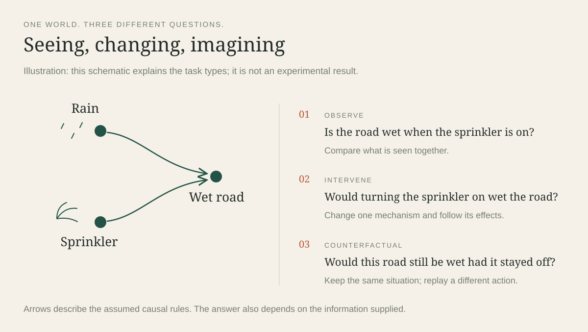

Several studies. Different kinds of evidence.
The work began with saved CLadder answers and grew into software checks, controlled experiments and studies of what the available information can actually tell us. A correct answer, a valid formula and a convincing explanation are separate achievements. The methods below keep those achievements separate.
The historical archive contains 91,272 responses across 12 conditions, matched to 10,112 CLadder v1.5 questions. The operation experiments added 6,382 saved requests across six endpoint labels. The information study reused 576 of those contract responses and added no model calls. Four later local studies added 1,104 scored generations. Repeated deliveries, figures, manuscripts and retry histories represent this evidence; they are not extra independent studies.
| Evidence status | What it means here |
|---|---|
| Saved and checked | Raw responses or executable records were available for the core CLadder, contract, local Qwen3, CausalTrace and Jinesis work. |
| Historical | Earlier runs or analyses remain useful, but later corrections take precedence. |
| Manuscript-reported | A draft or downloaded paper reports a result whose underlying raw experiment was not located or reproduced in this audit. |
| Partial snapshot | The October campaign was still running. Its saved progress is not a final benchmark result. |
| Proposed or generated | A plan, test generator or contrast corpus exists; that alone does not supply evaluated model scores. |
Report pp. 1–4, 17, 46. The synthesis reflects the saved evidence available at the 9 October 2026 audit.
Page references throughout this website refer to the supplied 112-page inventory report. Manuscript examples explicitly identify page numbers from the original thesis. The private report itself is not included in the public website.
Score the answer that was actually given.
CLadder asks questions about association, intervention and counterfactuals in small hypothetical worlds. The archive was joined to the versioned benchmark by question ID. The scorer read the final answer, including an explicit self-correction, rather than guessing the answer from an explanation or trusting an older prediction field.
Scroll across the figure →

This matters because coverage differs between runs. The GPT-5.5 archive covers 5,765 canonical items, or 57.01% of the benchmark. The forced-thinking Opus run contains a selected subset, and a separate GPT-labelled paired pilot has only 20 items. Their percentages cannot support a universal model ranking. Historical model names are recorded identifiers; complete prompts, deployment settings and immutable checkpoint identities were not consistently preserved.
Normalization, missing answers and duplicate attempts
The source is CLadder v1.5, pinned to dataset revision 18d684e444ed07cc57ae0f3a91ee983a79b8119a, with a separately pinned generator snapshot. Normalized records retain original and extracted answers, final text, available reasoning and exclusion flags.
There are 27 disagreements with stored prediction fields: two Sonnet self-corrections, 20 OpenRouter direct responses that visibly start Yes despite a stored No, and five truncated OpenRouter CausalCoT responses without a final answer. All 449 unparsed records—443 empty and six nonempty—count as incorrect in the all-record score. Parsed-only rates are diagnostic alternatives.
Final paired files contain one record per item and condition. Append-only raw histories contain additional attempts: Kimi has 20,264 rows for 20,224 final keys, OpenRouter 21,166 for 20,224, and the GPT pilot 80 for 40. Those attempts are not additional questions. Byte-identical copies and delivery packages also do not enlarge the sample. An empty Fable-labelled file has no observed performance; its stored 0.0 is not measured zero accuracy.
A separate GPT-labelled synthetic collection contains 9,881 noncanonical structured items: 3,200 association, 3,010 intervention and 3,671 counterfactual. It records 9,176 correct answers, approximately 92.87%, but its generation provenance and prompt equivalence are not authenticated by those rows alone.
Direct answers, six-step prompting and selected reruns
The direct condition requests one Yes/No word. CausalCoT requests six visible steps: graph, question type and causal rung, symbolic quantity, relevant numerical data, derivation and computation, followed by a labelled final answer. This changes instructions and output format together, so it does not isolate one reasoning operation.
Kimi has 123 repairs and 152 harms under CausalCoT, a net loss of 29 correct answers. OpenRouter has 59 repairs and 41 harms, a net gain of 18. The underlying OpenRouter model is unidentified. An older repeated-key Kimi file's count of 153 harms is superseded by the unique-item count of 152.
The forced-thinking Opus archive reruns 4,607 IDs whose original reasoning field was empty. On exactly those IDs, accuracy rises from 4,082 to 4,157 correct: 114 repairs, 39 harms, a gain of 75 answers or 1.63 percentage points. Only 354 new records contain nonempty reasoning. The changed request is missing, so the label does not establish how the intervention worked or how much internal computation occurred.
Report pp. 5–6, 13–14. Detailed answer counts are on the Results page.
A benchmark can reward the wrong world.
The next step was to reconstruct answers from the rules and numbers printed in each question. A disagreement with the released answer key can be a model error, a problem with the key, or a question that leaves more than one answer possible. The audit separates those situations.
For 158 DiamondCut problems, a mismatch between the displayed mechanism and generator equations explains exactly 37 label reversals. In question 9570, the displayed mechanism implies No while the released label says Yes. Several archives that miss every released label on these items match every displayed-world answer. That is a change in scoring interpretation, not a new model run.
The numerical audit allows for rounded percentages. Of 85 disagreements across 5,048 transparent numerical items, only nine remain robust when every displayed percentage may vary by half a percentage point. Together with the 37 deterministic reversals, this produces 46 bounded corrections—not a claim that every other label has been certified.
Mechanism checks, adjustment questions and withdrawn controls
In the DiamondCut mismatch, the negated branch uses X=U, Z=NOT(U) in the generator but X=NOT(U), Z=U in the displayed text. Under an intervention on X, the untouched equation for Z matters. The predicted mismatch occurs in 18 OR cases with do(X=0) and 19 AND cases with do(X=1), and in none of the other 121. Eighteen of the 37 also satisfy a stricter reading of the factual alternative.
A later, differently scoped audit parses all 726 nonce-word Boolean counterfactual questions. Independent evaluators agree on all tasks, and all renaming and rule-order checks pass. Under the complete-equation interpretation, it disagrees with 23 released labels, all DiamondCut; 11 occur among 568 questions satisfying the factual-alternative condition. These 23 and the earlier 37 describe different audit populations.
The adjustment extension examines all 569 nonce-story questions under universal total-effect standardization. There are 391 with one valid observed adjustment method, all agreeing with released labels; 134 require an explicitly unobserved covariate; and 44 have two valid methods without a strict graphical ranking. Path certificates and exact compatible-model examples support the checks.
The original numerical-control total of 4,608 is superseded by 4,567. Of 1,264 effect-on-the-treated questions, 108 repeat the same factual and hypothetical treatment state. The earlier certifier assumed a switch without checking the wording; 41 such items entered its control set and were withdrawn. This is a missing semantic precondition in the certifier, not proof of arithmetic failure by the models or proof that all 108 released labels are wrong.
Mediation: a known direction can coexist with an unknown size
The mediation audit examines 316 arrowhead questions using binary structural causal models with independent disturbances and exact displayed probabilities. Eight unknown outcome probabilities must satisfy four mixture equations. Linear optimization finds the smallest and largest compatible natural direct or indirect effects; a separate vertex enumeration agrees to approximately 2.64e-16.
All 316 effect magnitudes remain unidentified. Yet 226 intervals have one strict sign, supporting a binary answer under the stated model and target convention. The remaining 90 permit opposite signs: 41 natural-direct and 49 natural-indirect questions. In item 4405, two complete outcome tables preserve every supplied percentage while yielding direct effects of −0.00805358 and +0.0293.
The target still needs to be named. Pure and total natural indirect effects anchor the outcome at different treatment values and can have different signs. An informal “natural indirect effect” phrase does not automatically choose between them. The later correction therefore rules out unconditional target-error claims based solely on that distinction.
Report pp. 8–10, 22. These checks concern displayed information and stated assumptions.
A valid expression does not certify the whole explanation.
DoVerifier checks whether represented probability expressions can be related using a supplied causal graph and implemented do-calculus rules. The local work repaired parsing, graph checks and proof search, then examined saved CLadder responses. It also tested the gap between a formal expression and the explanation attached to it.
That gap is directly visible in a transplant experiment. Every one of 4,671 shuffled Gemini traces comes from a different question type. Among the first 300 evaluated targets, 216 transplanted explanations still receive expression acceptance. One target about being hard-working receives a donor explanation about hospital bills, age and recovery; the formalizer emits P(Y), which the expression checker accepts. This exposes incomplete whole-explanation validation.
Software repair and proof-search boundaries
The restricted parser treats model strings as inert input. Event values stay in expressions, while graph checks use the underlying variables. Unknown variables, conflicting assignments, malformed syntax, cycles and self-loops are rejected. The engine distinguishes canonical identity, prediction-to-target reachability, and reachability in both directions.
Implemented rewrites remove observations, exchange actions for observations, or remove actions. Inverse insertions and a general probability-algebra engine are absent. Search reports a found path, exhausted implemented search space, or depth limit. A failed bounded search therefore does not prove mathematical inequivalence.
The original 66 tests passed despite important defects. With graph W → Y, the baseline wrongly removes W from P(Y=1 | W); the repaired version rejects that deletion. With Z → Y, exchanging P(Y | do(Z=1)) previously lost the assigned value; the repair preserves P(Y | Z=1). Undeclared variables, cyclic graphs, trailing junk and parser-placeholder abuse are also rejected. Positive controls preserve valid parsing and the motivating three-step proof.
Twelve exact probes and a systematic 120-case assigned-outcome study preserve the evidence. The latter varies names, five assigned values, four path lengths and both orientations. The baseline wrongly finds the deletion/proof in all 120; the repaired engine does so in none. These are software test inputs, not language-model generations. Their incidence in the external paper's original evaluation is unknown.
Local proof evaluation and counterfactual adapter
The Kimi direct/CausalCoT evaluation has 20,224 final records with no missing condition, unknown ID, duplicate final key, prompt mismatch or metadata mismatch. It uses maximum proof depth 20, seed 42 and numerical tolerance 0.0051.
The expression stage parses 3,446 records, marks 625 ambiguous and 669 parse failures, and routes 5,372 outside its then-supported language. Canonical matches number 1,340. Gold-graph checks pass 1,340 of 2,863 eligible records; predicted-graph checks pass 947 of 2,020. All 4,574 saved proof-path records have length zero. These are identity checks across graph sources and modes, not 4,574 unique questions. This local full run shows no additional nontrivial symbolic rescue beyond identity.
Other intermediate checks also have restricted denominators: usable graphs in 6,250 CausalCoT records, reference edges in 4,980; question-type agreement in 6,039 of 7,059 parseable cases; scalar-result agreement in 2,605 of 7,903 eligible cases. The 169 of 1,834 records meeting all six operational checks are not independently certified whole-reasoning successes.
The later rung-3 adapter distinguishes deterministic counterfactual events, effects on the treated and pure natural effects from do-calculus proofs. It covers 3,792 question IDs and 7,584 condition records, computes 3,634 answers and leaves 158 confounding-ETT cases underidentified. Of answered questions, 3,600 match released labels. A perfect composite of 3,792 combines calculation with reference replay, so it is a compatibility audit rather than independent causal accuracy.
The adapter's formula execution does not settle prompt semantics or identification: item 9570 uses a reference equation that differs from the displayed mechanism; 4405 admits an opposite-sign compatible world; and item 1186 falls under the repeated-treatment wording correction. Conservative explicit-target extraction finds 108 direct and 1,570 CausalCoT targets; the trace-only solver solves zero direct and one CausalCoT record. These low counts describe parser and explicit-fact coverage.
Smaller experiments, judges and external feedback claims
The 300-target transplant sample is the first 300 rows, not a documented random sample. It has 182 exact-expression matches and 216 equivalence acceptances: 72.0%, with a descriptive Wilson interval of 66.7–76.8%. Five formalization errors count as nonacceptance. Original evaluator variants accept 291 and 257 on the same targets, but incomplete prompt/version records prevent interpreting their difference as one isolated intervention.
Four balanced 200-record verifier pilots accept 116, 80, 131 and 91 cases. A 20-record smoke accepts 10. Five development variants reuse the same 30 items and accept 24, 24, 26, 28 and 30. Full Gemini variants accept 4,535 and 4,076 of 4,671; Sonnet accepts 2,369 of 2,478. Acceptance also occurs on wrong final answers: 323 of 331 Gemini errors and 79 of 89 Sonnet errors. The “no-question” filenames do not prove a clean context-removal test because evaluator behavior also changed.
A separate floor-top-up selection contains 311 exact different-query donor traces. Its 200 evaluated rows yield 195 formalizations, 11 exact matches and 145 equivalence acceptances. It is not a fresh reasoning run or an established performance floor.
Legacy and revised GPT-5.4-mini judge payloads reveal the gold answer for all 55 successful annotations. The legacy protocol has 20 successes; the explicitly gold-aware protocol has 35 successes in 50 attempts and excludes its 16 persistent failures as unsupported-label cases. Samples share no question IDs, so they do not establish blind validation, interjudge agreement or an isolated gold-conditioning effect. A Sonnet two-pass protocol records 50 oracle attempts, 46 validated blind solutions and 27 accepted solutions; all 27 later trace-stage calls fail with provider HTTP 400 errors. It produces no successful stage annotations.
The external DoVerifier paper's reported verifier and feedback gains are external claims, not reproduced local scores. Local feedback templates and diagnostics were preserved, but no completed local feedback experiment was found. A matched generic retry would be needed to isolate the contribution of symbolic feedback. Historical software test counts grow from 66 to 120 to 178; repeated evaluation artifacts are identical copies, not fresh samples.
Report pp. 7–8, 12–16.
Specify what changes—and what stays the same.
The controlled studies use complete binary models: every variable is 0 or 1, every rule is supplied, and all possible background inputs can be checked. They ask whether a model preserves the operation and target requested by the question. Equivalent ordinary-program prompts provide a comparison using the same mathematics.
| Operation | Plain-language meaning | Exact rule in these studies |
|---|---|---|
| Observe | Look at cases where something happened. | Run the original rules, then retain background inputs satisfying the original evidence. |
| Intervene | Actively force a variable to a value. | Replace its assignment, recompute descendants, then apply any stated post-action evidence. |
| Same-person counterfactual | Change the action for the original case. | Use factual evidence to select original inputs, then reuse those exact inputs after the action. |
| Fresh-input intervention | Ask about a new case after the action. | First check factual possibility, then consider every fresh input under the action. |
| Effect contrast | Ask whether changing the action changes the outcome. | Compare outcome-event indicators under chosen and opposite actions on the same inputs. |
YES means the requested proposition is true for every compatible input. NO means false for every input. UNDETERMINED means some inputs give true and others false. These labels concern all possible cases, not the most likely answer. Every generated question has a nonempty compatible set.
V2 sampling, controls and pre-call checks
Seed 20260911 generates 64 independent base worlds: 16 calibration and 48 held-out, six task records per world. Only six calibration worlds were called, producing 216 requests. Calibration models have three roots and six or seven assignments; held-out models have four roots and 10–12 assignments. Held-out vocabulary adds NAND, NOR and XNOR, but every gate is defined in every prompt. Vocabulary and depth change together.
Each held-out world supplies two core causal questions, two matched program questions, one benign surface variant and one answer-changing gate edit. Per endpoint: 288 baseline requests, 96 generic-reasoning requests and 96 contract requests. Six endpoints therefore produce 2,880 held-out responses. The three diagnostic families each contain 16 worlds, split into eight different-answer and eight benign same-answer pairs.
The core 96 questions balance 32 of each answer label. Family/role frequencies are not balanced; their majority baseline gets 46 of 96. Uncertainty is clustered over base worlds rather than treating six correlated records as six independent observations.
Independent scalar and bit-parallel evaluators agree on answers and counts. Finite checks include 128 causal/program matches, 64 answer-changing edits, 21 renamings, 22 clause-order invariances and 21 narrative equivalents. Before held-out calls, coupling questions were revised to ensure the action can matter in all 16 coupling worlds and to distinguish fresh/no-action alternatives in the diagnostic half.
Software mutants deliberately implement wrong rules: observing as overriding, replacing same-input replay with fresh inputs, substituting effect for outcome, replacing AND with OR, or selecting evidence after rather than before the action. Their outputs test diagnostic power; they do not identify actual hidden neural algorithms.
Report pp. 17–19, 46, 52–60.
Try the observation–intervention difference
In this archived example, V0 = U0 XOR U1, V1 = U1 OR V0, V2 = V1 OR U1, and V3 = V2 AND V0. The question asks whether V3 is 0 in every compatible world. Switch the operation to see which worlds remain possible.
| U0 | U1 | V1 in requested run | V3 | Compatible? |
|---|---|---|---|---|
| 0 | 0 | 0 | 0 | Keep |
| 0 | 1 | 1 | 1 | Exclude |
| 1 | 0 | 1 | 1 | Exclude |
| 1 | 1 | 1 | 0 | Exclude |
YES — the outcome is 0 in every compatible world.
Seeing V1 equal 0 tells us which original worlds are compatible. Only the first row survives.
Deterministic interactive reconstruction of the archived example, rather than a new model experiment. See exact prompts and saved responses.
Translate, calculate and report are different steps.
A contract asks the model to print the inputs, mechanisms, operation, evidence, action, target, answer, counts and example input assignments. A program then executes the object the model actually produced. It does not silently replace a malformed object with the correct problem.
The checks separate a faithful transcription from successful calculation, correct reporting and a complete certificate. Gemini produced 78 faithful contracts in the common 96-question set, but 50 attached wrong answers. Executing those unchanged faithful contracts corrected all 50. Nano sometimes supplied correct counts and examples of both outcomes, then chose NO instead of UNDETERMINED. Those are different visible failures.
Strict execution and operation-aware interpretation
Strict execution checks the complete emitted model. The later operation-aware method was developed after inspecting all 576 contracts. For interventions and fresh-input actions, it erases the old rule for the variable that is overwritten before validating dependencies, then inserts the specified constant. All retained rules must be valid and acyclic. Fresh-input queries additionally need an evidence-consistent completion of the erased rule.
This recovers 19 correct executions with no loss relative to strict execution: 18 Sonnet and one Gemini. Sonnet rises from 78 to 96 executable correct answers; Gemini from 83 to 84. Sonnet's declared answers were already all correct, so these are execution and certification gains, not improved model answers. The relaxed method is query-relative and has no fresh-response evaluation.
Erasure is unsafe for same-person counterfactuals because the old rule selects the original inputs. For example, with Y=X XOR U, evidence X=0 and action do(X=1), original rule X=U selects U=0, while X=NOT(U) selects U=1. The post-action rules match but the answers differ. In software tests, safe erasure preserves all 32 intervention/fresh held-out cases; unsafe counterfactual erasure expands support in 18 of 48 and changes two answers.
Relative to model declarations rather than strict execution, operation-aware execution repairs 53 Gemini answers but harms four, and repairs six Nano answers but harms one. The zero-harm claim has a specific comparator.
Same label does not imply the same question
V3 compares each named input's excluded, false or true status. Whole-model fidelity implies the same input-by-input query signature; matching signatures imply matching counts and labels. These implications do not run backwards.
Among 576 contracts, strict execution accepts 544 objects, 540 with exact signatures and 543 with matching labels. Operation-aware execution accepts 563, of which 559 have exact signatures and 562 matching labels. Full transcription fidelity remains 529. All 19 newly recovered executions have exact expected signatures; 30 operation-aware equivalent objects lie outside complete fidelity.
Three Nano objects drop required evidence and enlarge the compatible input set while the runtime label stays UNDETERMINED. Two declarations are correct; the third declares NO. Another omission changes an expected YES to UNDETERMINED. Conversely, a logically implied evidence clause can be omitted harmlessly. Executing a printed object verifies that object's calculation; it does not restore evidence the model forgot.
The equation-relevance study replaces every one of 1,056 equation occurrences in 96 core tasks with all Boolean functions on its original distinct parents: 15,048 software evaluations. Only 365 occurrences preserve validity and exact signatures under every replacement. There are 3,204 alternatives that preserve the final label while changing the query, including 1,207 that preserve all counts too.
Individual irrelevance also need not imply joint irrelevance. If A=U XOR U and B=U XOR U, both are zero and Y=A AND B is zero. Replacing either rule alone cannot make Y true because the other stays zero. Replacing both by constant one makes Y true. These relevance claims depend on the allowed replacement class and requested resolution.
Report pp. 18–20, 24–25, 49–50.
Does a useful instruction survive a fair comparison?
Public CLadder perturbations change names, clause order, mechanisms or answer instructions. An identical repeat is included because a single answer flip can happen even without a meaningful rewrite. The main semantic instruction asks the model to keep the requested outcome fixed, preserve AND/OR/NOT, replace only the intervened variable and reuse the same background case.
The initial GPT-5.5 comparison improves from 26 to 36 correct out of 36 under the full instruction bundle. It survives the corrected mechanism-level test. The follow-up improves several descriptive totals, but no model comparison survives correction. The follow-up uses different question IDs while sharing many underlying mechanisms, so it is not independent-world replication.
Sampling, instruction components and resource sensitivity
The initial arm selects 36 nonce Boolean counterfactual questions, four from each of nine graph categories, equally enriched for historical successes and errors. Seven conditions across six endpoints produce 1,512 responses: original, identical repeat, renaming, clause reorder, generic reasoning, semantic bundle and mechanism edit. Edits comprise 24 gate swaps and 12 outcome-mechanism negations; re-rendering makes them more than uniform single-token changes.
The follow-up selects 36 other IDs and eight conditions, producing 1,728 responses. Target-only, gate-only, intervention-only and completion-only cues accompany original, repeat, generic and full-bundle conditions. It was designed after the first outcomes, then frozen before its own calls. Completion-only explicitly interprets the supplied clauses as complete Boolean equations: sufficient conditions are also necessary. This can resolve or add a premise convention, so a score gain need not be a repair under unchanged premises.
Question 30497 shows an AND error: generic reasoning treats one surviving input as sufficient. Gate-only, completion-only and the bundle correct it; target-only and intervention-only do not. The bundle can also harm: in Nano question 30046, a previously correct NO becomes UNDETERMINED despite a true sufficient OR input.
Each arm contains 20 alias-invariant structural models; 17 recur across arms. The analysis clusters questions with the same directed edges, truth tables and unobserved declarations under variable renaming. Cluster sign-flip tests and whole-cluster bootstrap intervals replace question-level independence. Six model comparisons are Holm-adjusted within each arm. Only initial GPT-5.5 passes: adjusted p=.046875, unadjusted 95% cluster interval 12.90–43.75 percentage points.
The follow-up also raises output caps from 3,072 to 4,096 tokens. Primary scoring takes the final explicit declaration in a completed response, including recognizable answer fields in malformed explanatory JSON. Length-truncated responses count as incomplete nonanswers. Five final declarations visibly correct earlier ones.
Seventeen original Gemini nonanswers receive same-cap and 12,288-token retries. Same-cap retries produce 13 answers and 10 correct; higher-cap retries 15 answers and 14 correct. The paired accuracy comparison has p=.34375. Selected-failure retries do not replace primary outcomes or estimate population missingness.
The 6,382-request V2 subtotal is 12 pilot + 216 calibration + 2,880 held-out + 1,512 initial public + 1,728 follow-up public + 34 retries. Recorded cost is $59.46, a provider-reported or catalog-estimated experiment subtotal rather than an account reconciliation.
Report pp. 20–22, 50–51.
Sometimes the honest answer is a range.
The information study asks a different question: what follows when the causal mechanisms are not fully known? Instead of forcing one estimate, an exact solver finds all values compatible with the observations and declared assumptions. The minimum and maximum form an identified set.
Learning an average effect does not necessarily tell us whether an action was necessary for one person's outcome. With uniform observed cells, the average treatment effect can range from −½ to ½. Adding both intervention marginals can pin that average effect to zero while the probability of necessity still ranges from zero to one. Different populations can look identical in observed and intervention averages.
Model class, target quantities and checkable certificates
The saturated binary model assumes treatment X precedes outcome Y, consistency and arbitrary hidden confounding. Eight response types (x,y0,y1) encode factual treatment and both potential outcomes. Their nonnegative weights sum to one. Observed joint probabilities constrain factual cells; optional intervention probabilities add constraints. Optional monotonicity rules out harmful types. Randomization, ignorability, independent noise and causal minimality are never silently assumed.
Targets include average treatment effect (ATE), effect on the treated (ETT), probabilities of necessity (PN), sufficiency (PS), necessity-and-sufficiency (PNS), and eight factual-cell conditional counterfactual queries. Positive evidence probabilities fix conditional denominators. Zero-probability evidence makes a conditional query undefined. Contradictory constraints make the model infeasible. Neither status is an ordinary unidentified interval.
Exact rational linear programming enumerates nonsingular bases after removing dependent equality rows and checks each vertex against all original constraints. Each bound has a compatible distribution attaining it and a dual certificate proving no more extreme value is possible. Infeasibility has a Farkas witness. An independent request-aware checker rebuilds constraints and target, then checks arithmetic without optimizing.
The model class, causal-to-linear-program compiler and exact-probability interpretation remain trusted. The solver does not parse arbitrary prose, discover a graph or represent sampling uncertainty. Response-function optimization and the causal hierarchy are established ideas; this work contributes an executable implementation, certificates, semantic distinctions and measurements on saved contracts. It adds no new model identification calls.
Validation and concrete information barriers
An independent enumerator checks 330 four-state and 6,435 eight-state response-type histograms. Direct factual/intervention evaluation agrees with separate coordinate formulas on all 6,765 records; the four-state grid is contained in the eight-state grid. After duplicate information signatures, there are 3,498 distinct information classes.
All 36,684 distinct defined class-target bounds agree, while 8,790 distinct conditional requests are undefined due to zero-probability evidence. All 45,474 unique request outputs pass certificate checking. A transportation-table proof establishes continuous sharpness for these signatures, rather than relying only on a finite sampled grid.
Adding intervention information never widens any of 34,998 defined comparisons and strictly narrows 21,711. Monotonicity is feasible for 1,452 of 3,498 classes; in 2,046 it conflicts with the supplied information, and each conflict has a Farkas certificate. These are design-grid counts, not estimates of real-world prevalence.
The zero-average-effect example can be built from half always-success and half never-success individuals, or from half helped and half harmed individuals, balanced across factual treatment. Both match the same observational and intervention marginals, but necessity among treated successes is zero in one and one in the other.
Another example has observed cells (00,01,10,11)=(¼,¼,⅛,⅜) and only P(Y0=1)=¼. ATE stays in [⅛,⅝] while ETT is exactly ¾. Even if a counterfactual probability is identified as ½, an individual's outcome can remain unknown. Nine saved example certificates were independently rechecked during the audit.
Report pp. 23–26.
Give the model more of the calculation, then check what remains.
Four local Qwen3-4B studies examine where explicit assistance helps. Raw questions require the whole computation. Execution tables supply every intermediate value but leave evidence selection and target construction. Proposition tables additionally supply the eligible inputs and the exact truth bit of the requested proposition. They supply no aggregate answer.
Accuracy is 49/192 for raw questions, 64/192 with execution tables and 106/192 with proposition tables. The tested proposition-versus-execution gain is 21.875 percentage points and survives correction. This is assistance using exact reference information; it is not improved unaided model learning. Changing answer vocabulary helps some assisted conditions and hurts raw ones, so it is not a uniform repair.
Factorial design, runtime and primary comparisons
The main study has 24 worlds and 48 questions, with two or three roots and four to seven gates. The three operation families each have four diagnostic and four benign pairs. Correct labels balance 16 each; target bits balance 24 each. Six separate pilot worlds add 12 roles. Independent evaluators agree on all 60 roles.
Twelve main conditions cross causal/program wording, raw/execution/proposition information and standard/explicit labels. Explicit labels ALL_TRUE, ALL_FALSE and MIXED have the same meanings as YES, NO and UNDETERMINED. The main study contains 576 responses.
Proposition assistance improves over execution materialization by 21.875 points, 95% interval 11.979–31.25, Holm-six p=.0067749. Raw-to-proposition improvement is a descriptive 29.6875 points. Execution materialization over raw improves 7.8125 points but fails correction, p=.2714844. The explicit-label main effect is 0.3472 points, p=1; it hurts raw questions by 9.375 points and helps proposition-assisted questions by 10.4167. Their tested interaction is +19.7917 points, interval 10.4167–30.2083, adjusted p=.0152588. Framing comparisons fail correction.
The local checkpoint is official Qwen3-4B Q4_K_M with recorded revision and matching hash. Runtime is Vulkan llama.cpp b10516; context 4,096, maximum 512 new tokens, temperature 0.7, top-p 0.8, top-k 20, min-p 0, presence penalty 1.5, no grammar constraints and nonthinking generation. One stochastic draw per cell means individual flips remain noisy even with a shared seed.
The audit independently recounts all 1,104 scored outputs; every stored scoring decision agrees, and all outputs complete with legal codes. Pooled correct counts are 219/576 main, 73/192 selection, 102/192 context and 119/144 multiplicity. They combine deliberately different conditions and are inventory checks, not leaderboard scores. Another 144 technical pilots and one setup generation are excluded from scoring.
Three follow-ups—and the results that did not support their explanations
Selection and target truth: 192 fresh responses reuse the 48 questions while crossing eligible-input membership M and all-input proposition truth T. Neither vector yields 17/48 correct, M alone 11, T alone 23 and both 22. T's main effect is +17.7083 points, interval 8.3333–28.125, Holm-three p=.03808594. M and the interaction fail correction. T includes target polarity and action contrast, so its benefit is not purely arithmetic. A nonsignificant M effect does not prove input selection was already correct.
Context removal: another 192 responses cross full/minimal context with label vocabulary. Minimal prompts retain all selected truth rows and answer definitions but delete mechanisms, original query and execution tables. Full context gets 53/96 correct; minimal gets 49/96. The −4.1667-point difference, interval −15.625–7.2917, and the other adjusted comparisons all fail. This establishes neither a fix nor equivalence. Minimal context increases uncertainty emissions and improves mixed answers while hurting definite answers.
Multiplicity and projection: 18 fresh hidden models supply six true, six false and six mixed questions. Two unused nuisance roots multiply the listed cases by four without changing proposition truth. The 144-response design crosses base/expanded rows, input columns retained/removed and label vocabulary. Removing input identifiers while retaining every truth row improves 53/72 to 66/72: +18.0556 points, interval 6.9444–29.1667, Holm-three p=.046875, with 15 repairs and two harms.
The intended claim that extra possible cases cause more uncertainty is not supported. Projected definite uncertainty falls from 5/24 to 1/24, contrary to the prediction, but the reverse effect also fails correction. The interaction fails. Thirty-six projected explicit-label cases are correct, a limited result on simple patterns rather than a general causal solution.
The selection study was specified before main outcomes but reuses the worlds. Context followed main outcomes; multiplicity followed context outcomes. Each individual study was frozen before its first generation, while the overall sequence was adaptive. Holm adjustments apply within each study, not across every adaptive hypothesis. World-level sign-flip tests assume symmetry of paired effects.
Report pp. 46–51.
An appealing story still has to predict new cases.
The project tried concrete computational accounts of model errors instead of stopping at selected examples. These candidate accounts had to outperform simpler baselines on reserved worlds and transfer to saved perturbations. None passed the frozen superiority criteria. Those negative results constrain broad explanations without proving that no better account could work.
Retrospective algorithms, feature prediction and narrow proof repair
The 48 existing V2 worlds split into 24 development and 24 validation worlds, keeping every role, representation and perturbation together. This is retrospective analysis: earlier aggregates and traces had already been seen. Eleven candidates include exact execution, causal-operation substitutions, correlation-losing set propagation, evidence omission/assignment, treating “not all true” as NO, and target-polarity loss.
A full mixture adds four constant responders, fixed priors and 2% uniform noise. It must beat both an exact-plus-constant mixture and a correct-label-conditioned confusion baseline on response log loss, including missing answers. Development and validation each use 1,152 responses. Zero of 24 comparisons passes; all adjusted conjunction p-values equal one. Unchanged fits transferred to 288 saved surface/mechanism perturbation responses also fail all 12 comparisons.
Fixed ridge-logistic predictors compare computational features—effective gates, log₂ compatible inputs and dependence lost by abstraction—with semantic features—operation, target bit and outcome/contrast—while controlling for the correct label. Independent feature checks cover 384 tasks and invariance across 320 equivalent records. All 1,632 validation predictions were frozen before outcome access. None of eight focal superiority tests or two causal-to-program transports passes. The known-label control is an explanatory baseline, not an operational predictor for unknown answers.
Checking contracts reveals distinct failures. Five of Nano's seven wrong declarations have correct original counts and valid examples of opposite outcomes but say NO on mixed support. Gemini has 61 wrong declarations, 50 with faithful specifications; none of those 50 has correct original counts, and their labels follow the wrong counts. Matching only a wrong label would therefore admit misleading explanatory stories.
A narrow witness checker independently executes two supplied inputs against the original question. Valid opposite outcomes justify UNDETERMINED. Fresh-input questions additionally require a supplied factual-feasibility witness. It uses neither emitted counts nor the oracle label. It repairs three of Nano's seven errors with no harms—one validation and two development—and none of Gemini's. This is a small supported correction, not a universal repair.
On 48 reserved Gemini questions, brief answers score 32, generic reasoning 39 and contracts 14. Contract-minus-brief is −37.5 points, adjusted p=.0156555; contract-minus-generic is −52.0833 points, p=.00012207. Formalization, proof demands and output format change together, so this is a package effect.
Report pp. 49–51.
Keep the claim as precise as the evidence.
The strongest parts of this work are inspectable: complete prompts, unchanged emitted objects, exact Boolean worlds, witness assignments, rational endpoint distributions and checkable proof certificates. A mathematical checker can expose a contradiction without revealing a model's hidden internal sequence of reasoning.
The archive review is deliberately selected rather than representative. Its 261 response cases span 168 questions; 151 cases across 118 questions receive 175 assistant readings, including 24 overlap cases with 22 stage agreements. Readers are from the same assistant family, not independent human validation. The 81 qualified localizations divide into 41 mechanism/graph, 21 identification, 15 query-target and four computation cases; these are examples within the selected audit, not population error frequencies.
What can be reproduced, and what remains bounded
Saved packages contain manuscripts, bibliographies, figures, tables, task data, replay scripts and hashes. V3's exact solver, grid generation, certificate checking and semantic audit use standard-library Python. Default analysis is offline, but regeneration scripts may overwrite derived outputs and timestamps. Reading frozen evidence differs from running regeneration or making new model calls.
Some delivery packages intentionally omit duplicate raw archives and original paired files. Normalized provenance or a saved prompt projection does not mean every original request exists inside the package. Baseline prompts absent from the archive remain canonical proxies rather than authenticated actual requests.
Substantive intermediate text is unavailable for all 10,108 original Nano responses. Sonnet's 10,082 nonempty reasoning fields include 3,788 answer-only fields, leaving 6,294 substantive ones. Missing text cannot support an intermediate-stage diagnosis, and a nonempty summary need not be a full derivation.
Controlled complete Boolean models do not establish causal discovery, reasoning with unknown real-world mechanisms, causal identification in arbitrary models or general competence under sampling uncertainty. Assistance using exact truth tables is not unaided learning. One local checkpoint, small world counts, one stochastic draw per cell, adaptive follow-ups and single-analyst trace readings limit generalization.
Endpoint-version uncertainty, selected samples, overlapping mechanisms, post-hoc parser clarifications and post-hoc interpreter development remain visible. Null comparisons are neither proof of equivalence nor proof that a component is already solved. External paper results and unsubmitted drafts retain their evidence status.
Report pp. 9–10, 22–26, 46–51. Later corrections supersede earlier historical claims.
The technical terms, in plain language.
- Causal model
- A set of rules describing how variables produce other variables. Here, rules are supplied rather than discovered from real-world data.
- Estimand
- The exact quantity a question asks for: an outcome probability, a difference under two actions, or another specified causal effect.
- Identification
- Whether every world compatible with the supplied information gives the same requested quantity. A sign can be fixed even when the magnitude varies.
- Root input
- A starting variable that has no defining equation. A root assignment is one possible combination of starting values.
- Compatible support
- The set of input worlds that remain possible after applying the specified evidence and operation.
- Oracle
- An exact reference solver or supplied answer for a defined task. It is only as appropriate as the assumptions it uses.
- Contract
- A structured description of the rules, operation, evidence and target that software can execute.
- Proof witness
- A concrete compatible input that demonstrates a true or false target. Valid examples of both outcomes establish that the result is mixed.
- ETT / mediation
- ETT is the treatment effect for those actually treated. Mediation separates an effect into pathways, with natural-effect definitions specifying which treatment state is held fixed.
- Confidence interval
- A range reflecting sampling variability under stated assumptions. It does not repair selection bias, answer-key defects, or unreliable annotation.
- Adjusted p-value
- A test result corrected for a specified family of comparisons. Failure to pass a test does not establish that two conditions are identical.
- Clustered analysis
- An analysis that keeps related questions from the same world or item together instead of pretending every response is independent.
- AUROC / F1
- AUROC measures how well a score ranks two classes; 0.5 is chance ranking. F1 combines precision and recall for classification. Neither automatically measures faithful reasoning.
- Residual patching / steering
- Replacing a model activation or adding a chosen direction to it. A changed answer establishes sensitivity to the intervention, but its interpretation needs controls.